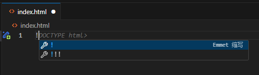

2 你的第一个网页
2.1 创建你的第一个网页
创建工程文件夹：在电脑桌面（或自定义路径）右键，选择 “新建 - 文件夹”，将文件夹命名为 ““mywebsite”，附文字”。
如果出现信任文件夹提醒，请选择信任文件夹，点击全部信任：
在 VS Code 中打开文件夹： 打开 VS Code，点击左上角 “文件 - 打开文件夹”，选中刚刚创建的 “mywebsite” 文件夹，点击 “选择文件夹”。
新建 index.html 文件： 在 VS Code 左侧 “资源管理器” 中，右键点击 ““mywebsite”” 文件夹，选择 “新建文件”，命名为 “index.html”（注意后缀为.html，不可省略）。
生成 HTML5 基础骨架： 双击打开 “index.html” 文件，在编辑区输入英文感叹号 “!”，然后按下回车键，Emmet 插件会自动生成 HTML5 的基础代码骨架。

增大编辑器字号 快捷键：Ctrl+Shift+P，输入字号，弹出快捷选项，选择增大编辑器字号，反复操作，直到字号合适。
反之，如果觉得字号太大，也可以使用快捷键Ctrl+Shift+P，输入字号，弹出快捷选项，选择减小编辑器字号。
2.2 修改网页内容
- 在生成的代码中，找到<title> Document </title>，将 “Document” 改为自定义标题（如 “我的第一个网页”），该标题会显示在浏览器标签栏。 - 找到<body></body>标签，在两个标签之间输入<h1> Hello, World! </h1>，这是网页的一级标题内容。 - 在h1标签的下面继续输入<p>This is my HTML website.</p>，这是网页的段落内容。
完整代码如下：
<!DOCTYPE html>
<html lang="en">
<head>
<meta charset="UTF-8">
<meta name="viewport" content="width=device-width, initial-scale=1.0">
<title>Document</title>
</head>
<body>
<h1>Hello, World!</h1>
<p>This is my HTML website.</p>
</body>
</html>2.3 预览网页
使用Live Server实现实时预览。在 VS Code 编辑区右键，选择 “Open with Live Server”（若未显示该选项，可点击底部状态栏的 “Go Live” 按钮）。
此时会自动打开浏览器并加载网页，你将看到页面中显示 “Hello, World!”，至此你的第一个网页创建完成。
后续修改 HTML、CSS、JS 等文件后，浏览器会自动刷新，无需手动刷新。